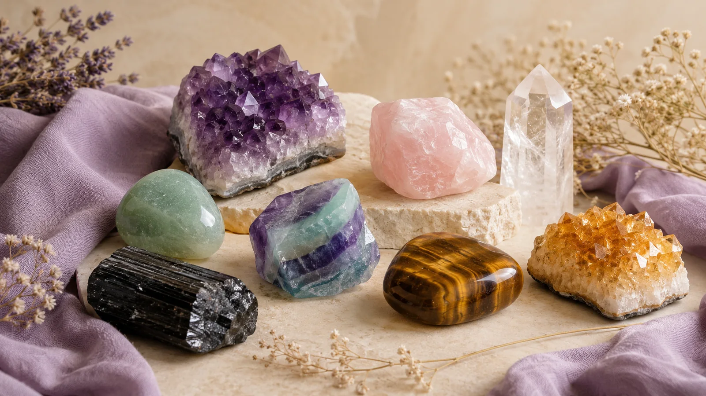
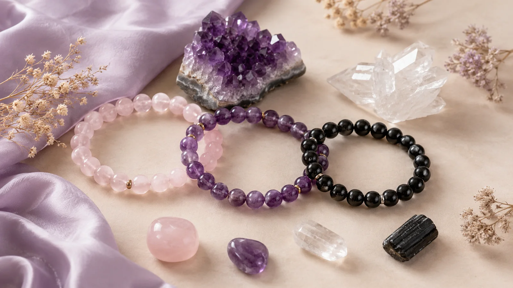

Aura Nova Gems Learning Hub
Crystal Meanings A–Z Guide
Discover the meanings, healing benefits, chakra connections, zodiac associations, and everyday uses of popular crystals and gemstones.
What are crystal meanings?
Crystal meanings describe the symbolic energy, traditional uses, and intention-based benefits associated with each stone. Use this guide to compare crystals by intention, chakra, zodiac sign, and everyday ritual.
How to use this guide
Search a crystal name, filter by chakra or intention, then open each card to understand its meaning, best uses, and related shopping direction.
Popular intentions
Visual crystal guide
Compare crystals by color, texture, and intention
Use the display below as a soft visual reference while browsing the A–Z library. Each crystal card now uses real styled imagery instead of simple placeholder gradients.

A–Z crystal library
Find the right crystal for your intention
30 crystals shown
No crystals found
Try searching by a broader intention like love, calm, protection, abundance, or focus.
Beginner guide
How to choose a crystal
Start with your intention. For love and emotional healing, choose heart-centered stones like Rose Quartz or Green Aventurine. For grounding and protection, choose Black Tourmaline, Obsidian, Hematite, or Smoky Quartz. For clarity and spiritual practice, choose Clear Quartz, Amethyst, Fluorite, or Selenite.

Decide whether you want calm, love, protection, focus, abundance, or spiritual clarity.
Use chakra associations to narrow down your best stone family.
Wear bracelets for daily energy, place towers at home, or use palm stones for meditation.
Shop by meaning
Turn crystal knowledge into daily practice

FAQ
Crystal meanings questions
Which crystal is best for beginners?
Clear Quartz, Amethyst, Rose Quartz, Citrine, and Black Tourmaline are excellent beginner crystals because they cover clarity, calm, love, abundance, and protection.
What crystal is good for protection?
Black Tourmaline, Obsidian, Hematite, Smoky Quartz, and Tiger’s Eye are commonly chosen for grounding and protective intentions.
What crystal is best for love?
Rose Quartz is the classic love crystal. Rhodonite, Moonstone, Green Aventurine, and Garnet are also popular for emotional healing and heart-centered energy.
Can I wear different crystals together?
Yes. Many people combine crystals by intention, such as Rose Quartz with Amethyst for calm love energy, or Citrine with Tiger’s Eye for confidence and abundance.